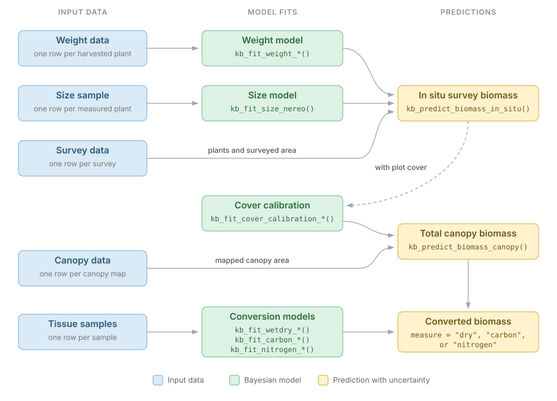
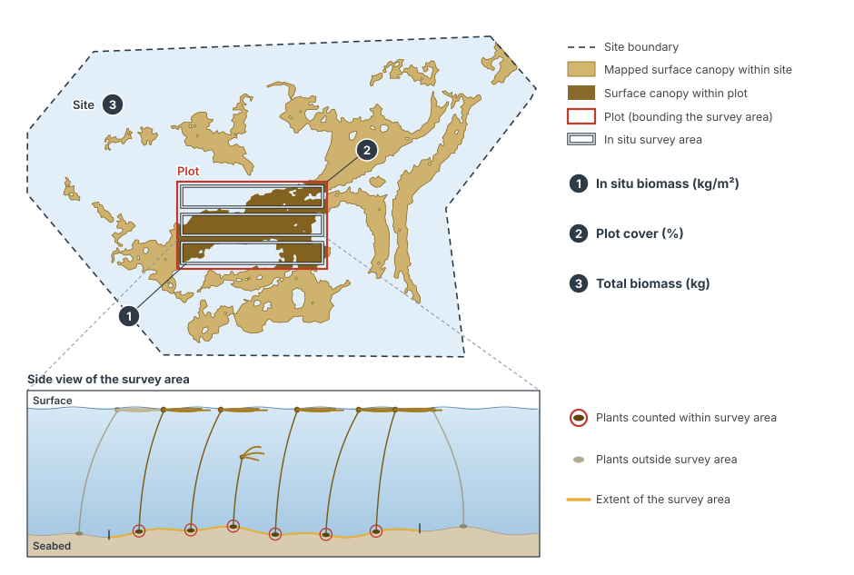
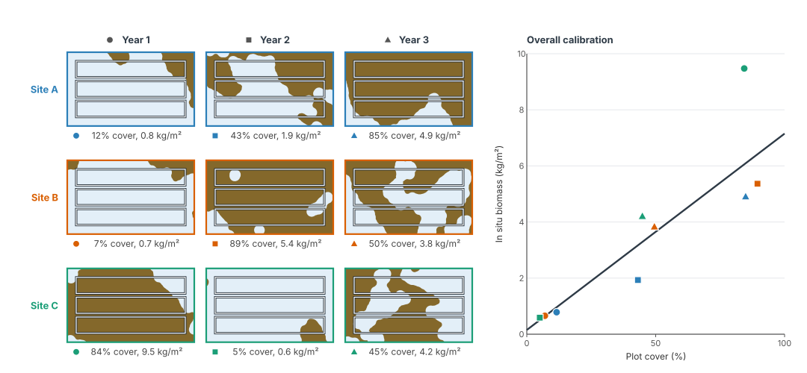
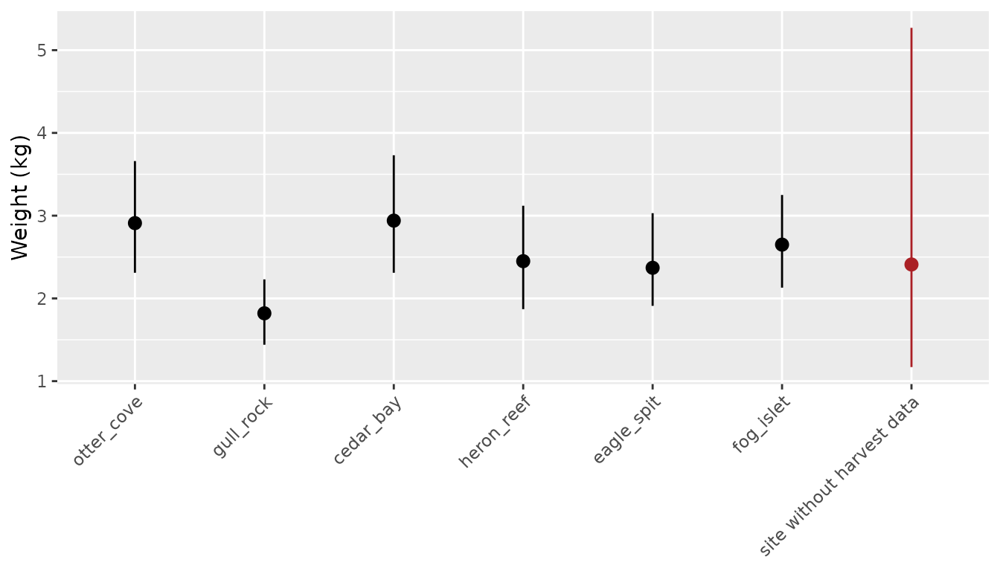
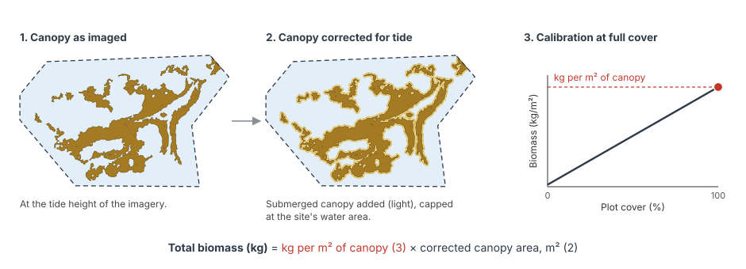

Overview
kelpbio estimates the biomass of Nereocystis luetkeana and Macrocystis pyrifera by combining several sub-models, each fitted to its own data:
- In situ biomass: weight and size models give the mean weight of the plants counted in an in situ survey, which is converted to wet biomass per m² given the fixed survey area.
- Cover calibration: a model relates estimated in situ biomass to the surface canopy cover (%) within a plot bounding the in situ survey area, measured from a canopy map (i.e., from aerial imagery).
- Total biomass: the cover calibration is applied to all surface canopy mapped across the site.
- Dry, carbon, and nitrogen biomass: dry:wet ratio, carbon fraction, and nitrogen fraction models convert the total biomass.

The sections below describe the data, the general modelling approach, and then each step in turn, including specific model descriptions.
Data collection
kelpbio expects data collected in a specific way, and its estimates are interpreted according to how the data were collected.
Survey design
At each site, an in situ survey counts plants within a survey area. All or some sample of the plants’ sizes are measured (diameter for Nereocystis and number of fronds for Macrocystis). If a sample of plants is measured, a size model is required. For Nereocystis, diameter can refer to maximum sub-bulb diameter, diameter measured at some fixed distance below the bulb, or diameter of the bulb itself (i.e., any measure that can be related to weight with a power law allometric model). In the diagram below, the survey area is three parallel transects, each with a set length and swath width; other designs are possible as long as plants are counted within an area of known size. Here the three transects form one survey rather than three, because their combined area is easier to relate to canopy percent cover.
Surface canopy is mapped across the whole site (i.e., from aerial imagery), with the tide height at the time of imaging and the extent of the water area classified (i.e., the total area classified as kelp or non-kelp).
Percent canopy cover within a plot (plot cover) is calculated for each in situ survey, where a plot is defined as the area bounding the in situ survey area.
Both canopy areas, within the plot and across the site, are corrected for tide and capped at the area they lie within (i.e., the plot area and classified area, respectively).

Three quantities link the in situ survey and the canopy map:
- In situ biomass: the biomass per m² of the survey area (estimated from counts and weight/size models).
- Plot cover: the percent of the plot covered by mapped canopy.
- Total biomass: the biomass of all canopy mapped within the site (estimated from cover calibration model).
The cover calibration, fitted to pairs of plot cover and estimated in situ biomass, converts the site’s canopy to total biomass. It should be fitted to many surveys across sites and years, ideally spread from low to high cover. More than one plot per site is recommended, since each adds information on how that site differs from the others. The plot should be drawn tightly around the survey area, so that its cover accurately describes the area surveyed.
The figure below shows nine surveys, three sites by three years, and the calibration fitted to them. The biomass and plot cover values are illustrative.

Timing
kelpbio is intended for annual estimates of biomass at a site: its models have site and year effects, but none for month or day of year. Estimates therefore describe the part of the season that the data come from, so they are most useful when surveys are timed consistently from year to year, typically at the peak of the season. If timing differs between years, a seasonal change appears as a change between years. If surveys within a year span the season, the seasonal change adds to the unexplained variation. Weight, size, survey, and canopy data for a site-year should all come from the same part of the season.
Alternative survey designs (Nereocystis)
Counts from the surface
The kelpbio modelling approach allows Nereocystis plants to
be counted from the surface, e.g., in quadrats from a boat. The data
take the same format: survey_area_m2 is the combined area
of the quadrats and plants the total number of plants
counted in them. For the estimate to be valid:
- every plant reaching the surface within each quadrat is counted, and each plant is counted only once (for example, bulbs on the quadrat edge are counted on two adjacent sides only);
- within a defined plot area, quadrats are placed randomly or systematically (for example, along a transect line) without regard to where the kelp is;
- counts and areas of the quadrats on one line or in one group are summed to one row, since neighbouring quadrats are not independent;
- counts are made at low slack tide, when the fewest bulbs are submerged;
- the size sample is measured from plants reaching the surface.
The estimate is then interpreted as the biomass of plants that reach the surface, a lower bound on the total biomass of the site that is not directly comparable with estimates from in situ surveys that count submerged plants.
Site-wide census
kelpbio can also be used in the case of a full census, i.e., where
all plants are counted and measured across the entire site (e.g., from
high-resolution aerial imagery). In this case, the in situ biomass
prediction is the total biomass
(kb_predict_biomass_in_situ() with
per_area = FALSE, and survey_area_m2 the site
area) and the cover calibration step is not necessary.
Compiling data for kelpbio
kelpbio has specific requirements for compiling data into tables for use by model fitting functions, including column names and the expected values/types in each column. Details are in the Data format article.
Modelling approach
Each sub-model is a Bayesian model fitted with Stan (Carpenter et al. 2017). A Bayesian model returns thousands of plausible values (draws) of each parameter, rather than one best value (McElreath 2020). kelpbio uses the draws to:
- Carry uncertainty through the steps and from one sub-model to the next. Every prediction is computed for each draw, then summarised, so in situ biomass carries the uncertainty of the weight and size models, and total biomass carries uncertainty of the calibration model.
- Include existing knowledge as priors, such as the published effect of tide height on visible canopy (see Cover calibration).
Hierarchical effects
Plants differ among sites and years. The weight, size, and cover calibration models are hierarchical: they estimate an effect for each site and each year (the weight and size models also each site-year), and the SD of each set of effects. This has two benefits:
- A site or year with few data ‘borrows’ information from the others, so its estimate is pulled toward the average.
- A site, year, or site-year missing from a particular sub-model’s data can still be predicted. In biomass estimates, the effect is drawn from the estimated variation among levels, which widens its compatibility interval. For example, a site with no harvested plants is predicted from the population-level relationship, with an interval widened by the estimated variation among sites (i.e., the estimated random-effect standard deviation).
The figure below shows the expected weight of a 40 mm Nereocystis plant in 2025 at each site with weight data that year (black) and at a site without harvest data (red), with 95% compatibility intervals.

Each model below is shown as printed by
kb_model_describe() followed by its key assumptions.
In situ biomass
Nereocystis weight model
Plant weight increases with diameter as a power law above a weight floor (Packard 2023), which is the weight as diameter approaches zero.
kb_model_describe(fit_weight_sim_nereo)
#> Weight allometry - Nereocystis luetkeana
#> Response: wet weight (kg); predictor: plant diameter (mm)
#>
#> Likelihood
#> log(weight_kg) ~ Normal(log(mu), sd_residual)
#> mu = weight_floor + alpha * x^diameter_power
#> log(alpha) = intercept
#> + site_effect[site]
#> + year_effect[year]
#> + site_year_effect[site, year]
#> x = diameter_mm / d0, d0 = 24.9 (geometric mean diameter)
#>
#> Random effects
#> site_effect[site] ~ Normal(0, sd_site) site effect on log(alpha)
#> year_effect[year] ~ Normal(0, sd_year) year effect on log(alpha)
#> site_year_effect[site, year] ~ Normal(0, sd_site_year) site:year effect on log(alpha)
#>
#> Priors
#> intercept ~ Normal(0, 2)
#> diameter_power ~ Normal(2, 1) T[0, ]
#> weight_floor ~ Normal(0, 0.5) T[0, ]
#> sd_residual ~ Exponential(1)
#> sd_site ~ Exponential(1)
#> sd_year ~ Exponential(1)
#> sd_site_year ~ Exponential(1)Weight is modelled on the log scale, so the back-transformed mean is
the median weight. Predictions multiply it by
exp(sd_residual^2 / 2) to give the expected weight.
Key assumptions:
- The residual variation in log weight is normally distributed.
- Weight is a power law in diameter plus a floor.
- The weight above the floor varies by site, year, and site-year.
- The floor and the power (i.e., scaling exponent) do not vary by site or year.
Macrocystis weight model
Plant weight increases with the number of fronds as a power law.
kb_model_describe(fit_weight_sim_macro)
#> Weight allometry - Macrocystis pyrifera
#> Response: wet weight (kg); predictor: frond count
#>
#> Likelihood
#> weight_kg ~ Gamma(shape, shape / mu)
#> mu = alpha * x^fronds_slope
#> log(alpha) = intercept
#> + site_effect[site]
#> + year_effect[year]
#> + site_year_effect[site, year]
#> x = fronds / f0, f0 = 4.48 (geometric mean frond count)
#>
#> Random effects
#> site_effect[site] ~ Normal(0, sd_site) site effect on log(alpha)
#> year_effect[year] ~ Normal(0, sd_year) year effect on log(alpha)
#> site_year_effect[site, year] ~ Normal(0, sd_site_year) site:year effect on log(alpha)
#>
#> Priors
#> intercept ~ Normal(0, 2)
#> fronds_slope ~ Normal(1, 0.5)
#> shape ~ Exponential(0.1)
#> sd_site ~ Exponential(1)
#> sd_year ~ Exponential(1)
#> sd_site_year ~ Exponential(1)Key assumptions:
- Weight is Gamma distributed, with a constant coefficient of variation.
- Weight is a power law in frond count.
- The weight at a given frond count varies by site, year, and site-year.
Nereocystis size model
Nereocystis plants are counted, but typically only a sample of them is measured. Plant diameters at a site in a year follow a Weibull distribution. Macrocystis surveys measure every plant counted (a size census), so they need no size model.
kb_model_describe(fit_size_sim_nereo)
#> Size distribution - Nereocystis luetkeana
#> Response: plant diameter (mm)
#>
#> Likelihood
#> diameter_mm ~ Weibull(shape, mu / gamma(1 + 1 / shape))
#> log(mu) = intercept
#> + site_effect[site]
#> + year_effect[year]
#> + site_year_effect[site, year]
#>
#> Random effects
#> site_effect[site] ~ Normal(0, sd_site) site effect on log(mu)
#> year_effect[year] ~ Normal(0, sd_year) year effect on log(mu)
#> site_year_effect[site, year] ~ Normal(0, sd_site_year) site:year effect on log(mu)
#>
#> Priors
#> intercept ~ Normal(0, 2)
#> shape ~ Exponential(0.1)
#> sd_site ~ Exponential(1)
#> sd_year ~ Exponential(1)
#> sd_site_year ~ Exponential(1)Key assumptions:
- Diameter is Weibull distributed.
- The mean diameter varies by site, year, and site-year.
- The shape of the distribution is the same at all sites and years.
- The measured plants are a random sample of the plants counted.
Mean plant weight
The mean plant weight of a site-year is the weight model averaged over the site-year’s size distribution. On each draw, 100 sizes spread evenly across the distribution (the midpoints of 100 equal-probability intervals) are each converted to a weight, and the weights averaged. Averaging weights, rather than taking the weight of the average size, matters because weight increases faster than diameter. This is known as Jensen’s inequality. Sizes are limited to the largest diameter in the size data. Above the largest diameter in the weight data, the weight model is extrapolated.
For a typical Nereocystis site-year, the mean plant weight is 0.97 kg, compared with 0.72 kg for a plant of mean size.
Survey biomass
The in situ biomass of a survey with a size sample is
biomass_kg_m2 = plants * mean_weight_kg / survey_area_m2With a size census, it is the sum of the counted plants’ expected
weights over the area surveyed. A plant only partly inside the survey
area, such as a Macrocystis plant on the edge of a transect, is
marked partial in the data and counts as half.
The uncertainty in in situ biomass is that of mean plant weight, from the weight and size models (or the weight model alone with a size census). The cover calibration takes the mean and SD of each survey’s draws.
Key assumptions:
- Every plant in the survey area is counted, so counts carry no sampling error.
- The survey area is known without error.
Cover calibration
The cover calibration relates the in situ biomass of each survey to the cover of its plot: biomass increases linearly with cover above a floor. The floor is the biomass not tracked by surface canopy, such as juveniles and submerged plants.
The Nereocystis model is shown. For either species, the model includes the probability that a survey holds plants only when a survey counted no plants.
kb_model_describe(fit_cover_calibration_sim_nereo)
#> Cover calibration - Nereocystis luetkeana
#> Response: biomass_kg_m2, the mean wet biomass of an in situ survey (kg/m²), with SD biomass_sd_kg_m2 from plant weight
#>
#> Likelihood
#> biomass_kg_m2 = 0 with probability 1 - p, else ~ Gamma(shape, shape / mu)
#> shape = 1 / (cv_residual^2 + weight_cv^2), weight_cv = biomass_sd_kg_m2 / biomass_kg_m2
#> logit(p) = presence_intercept + presence_cover_slope * 100 * cover
#> mu = biomass_floor
#> + cover_slope * exp(year_effect[year] + site_effect[site]) * cover
#> cover = min(1, canopy_area_m2 / (1 - tide_height_slope * canopy_tide_height_m) / plot_area_m2), and 1 where canopy_area_m2 > 0 and canopy_tide_height_m >= 1 / tide_height_slope
#>
#> Random effects
#> year_effect[year] ~ Normal(0, sd_year) year effect on log(cover_slope)
#> site_effect[site] ~ Normal(0, sd_site) site effect on log(cover_slope)
#>
#> Priors
#> cover_slope ~ LogNormal(2, 1)
#> biomass_floor ~ Normal(0, 0.2) T[0, ]
#> tide_height_slope ~ Normal(0.276, 0.04) T[0, 0.5]
#> cv_residual ~ Exponential(1)
#> presence_intercept ~ Normal(0, 2)
#> presence_cover_slope ~ Normal(0, 20)
#> sd_year ~ Exponential(1)
#> sd_site ~ Exponential(1)The canopy area in each plot is corrected to zero tide, since a rising tide submerges canopy, and capped at the plot area, so cover is at most 100%:
corrected_canopy_area_m2 = min(canopy_area_m2 / (1 - tide_height_slope * canopy_tide_height_m), plot_area_m2)
cover = corrected_canopy_area_m2 / plot_area_m2The proportion of canopy lost per metre of tide
(tide_height_slope) is set by an informative prior from
Timmer et al. (2024); the calibration data
do not inform it. At a tide height of 1 / tide_height_slope
or more (the tide limit, at least 2 m), the correction has no finite
value and the corrected canopy is the cap; a warning is given when a
plot or map is past the tide limit on more than 5% of draws.
Each survey’s in situ biomass is itself an estimate. Its uncertainty from mean plant weight enters the model, so a less certain survey has less influence.
Key assumptions:
- In situ biomass is Gamma distributed, with a coefficient of variation that combines residual variation and the survey’s mean plant weight uncertainty.
- In situ biomass represents the biomass per m² across the plot.
- Expected biomass increases linearly with tide-corrected cover above a floor.
- Biomass per unit of canopy varies by site and by year; the floor does not.
- When a survey counted no plants, the probability that a survey holds any plants increases with cover (hurdle component).
Total biomass
The mapped surface canopy is assumed to be the known extent of the bed, so the floor biomass (i.e., biomass at 0% cover) is not applied outside of it. The total biomass of a canopy map is the calibration at 100% cover (the expected biomass per m² of bed) times its canopy area, corrected for tide as in the cover calibration and capped at the water area the imagery classified:
biomass_kg = (biomass_floor + cover_slope * exp(site_effect + year_effect)) * corrected_canopy_area_m2
corrected_canopy_area_m2 = min(canopy_area_m2 / (1 - tide_height_slope * canopy_tide_height_m), classified_area_m2)Applying the calibrated biomass estimate at 100% cover across the
site’s mapped canopy relies on the model form being linear. The biomass
in a plot is biomass_floor times the plot area plus
cover_slope multiplied by the canopy area, so the canopy
term does not depend on the size of the plot drawn around it. A
nonlinear calibration (e.g., power law model with scaling exponent not
equal to 1) would give a total that changed with the size of the area
over which percent cover is measured.
The probability that a survey holds plants is not applied, since mapped canopy is taken to hold plants. The interval is for the expected total: it includes the uncertainty in the calibration and its site and year effects, not the scatter of individual surveys around it.

Dry, carbon, and nitrogen biomass
The dry:wet ratio, carbon fraction, and nitrogen fraction of tissue samples share one model form, shown here for the dry:wet ratio.
kb_model_describe(fit_wetdry_sim_nereo)
#> Wet/dry ratio - Nereocystis luetkeana
#> Response: dry_mass_g / wet_mass_g, the dry:wet ratio of a sample
#>
#> Likelihood
#> dry_wet_ratio ~ Beta(mu * precision, (1 - mu) * precision)
#> logit(mu) = intercept
#>
#> Priors
#> intercept ~ Normal(0, 2)
#> precision ~ Exponential(0.01)Key assumptions:
- The ratio or fraction is Beta distributed.
- The mean is the same for all samples, whatever their site, month, or tissue.
Wet biomass, in situ or total, is converted with the expected ratio and fractions:
dry_biomass = biomass * dry_wet_ratio
carbon_biomass = dry_biomass * carbon_fraction
nitrogen_biomass = dry_biomass * nitrogen_fractionEstimates and convergence
- The estimate is the median of the draws, and the lower and upper limits their 2.5% and 97.5% quantiles, a 95% compatibility interval (Rafi and Greenland 2020).
- A model has converged when every parameter has an Rhat below 1.01 and an effective sample size of at least 100 per chain, and at most 0.2% of draws are divergent transitions (Vehtari et al. 2021).